Meine WG, meine Familie


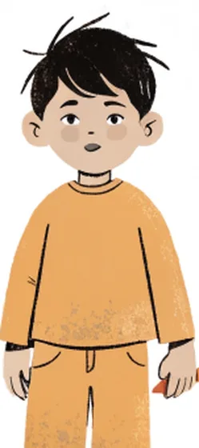
이번 과가 끝나면
방과 가구를 관사와 함께 말하고 설명할 수 있어요.
Das ist ein Bett. Das Bett ist alt.
없는 것을 말하고, 모르는 단어를 물어볼 수 있어요.
Ich habe keinen Tisch. · Wie heißt das auf Deutsch?
여럿에 대해 말할 수 있어요.
Im Koffer sind … · Wir sind … · Ihr seid …
가족을 소개하고 나이와 직업을 말할 수 있어요.
Das ist meine Mutter. Sie ist 55. Sie ist Lehrerin.
21–100 숫자를 말하고 알아들을 수 있어요.
einundzwanzig · achtunddreißig · hundert
방 소개 메시지와 가족 사진 설명을 쓸 수 있어요.
Mein Zimmer ist … · Das ist meine Familie.
이번 과에서 배우는 문법
이번 주 수업 · 3차시
Das ist mein Zimmer.
1 · Einstieg · 민준의 새 방 5분
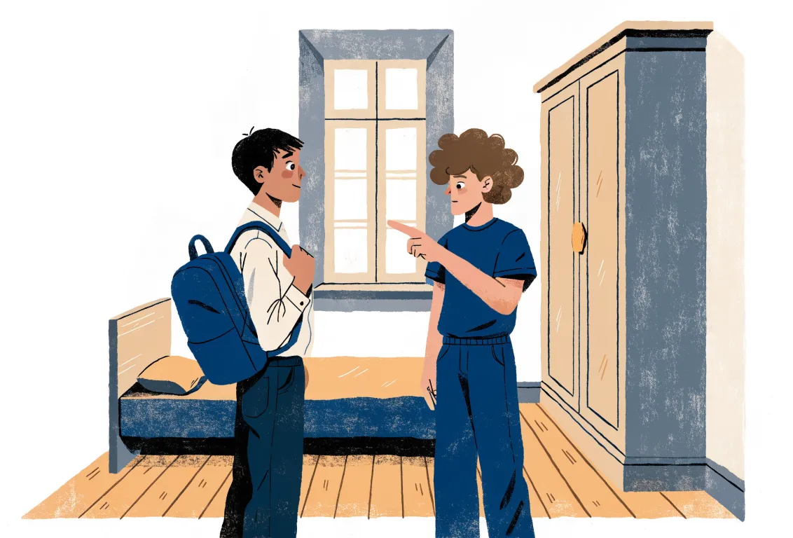
1a 그림을 보세요. 방에 무엇이 있어요? 무엇이 없어요? 한국어로 말해 보세요.
1b 이번 과가 끝나면 이런 말을 할 수 있어요. 들어 보세요!
Mein Zimmer ist klein, aber hell. Ich habe ein Bett und einen Schrank. Das ist meine Familie: meine Mutter, mein Vater und meine Schwester.
내 방은 작지만 밝아요. 침대 하나와 옷장 하나가 있어요. 이건 우리 가족이에요: 엄마, 아빠, 그리고 누나(언니)예요.
2 · Im Zimmer · 방 안의 물건 10분
▶를 눌러 듣고 따라 하세요. 단어는 언제나 관사와 함께 외워요. 색깔을 보세요!
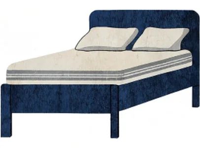
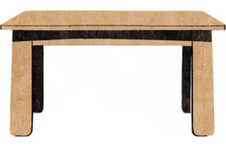
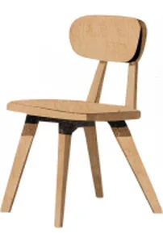
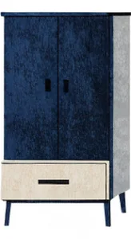
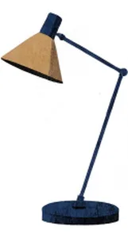
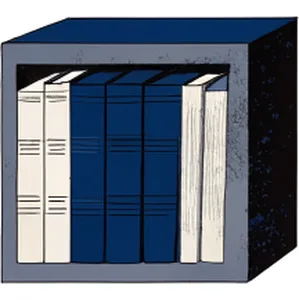
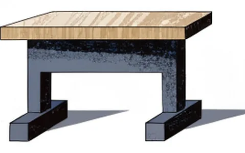
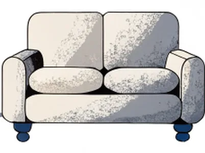
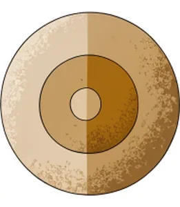
- Bett
- Stuhl
- Lampe
- Schrank
- Sofa
- Spiegel
- Regal
- Teppich
3 · Teil A · Das ist dein Zimmer! · 방 구경 15분
Track 2-01 WG에 온 다음 날 아침, 요나스가 민준의 방 문을 열어요.
| # | 문장 | r | f |
|---|---|---|---|
| 1 | Das Zimmer ist klein und dunkel. | ||
| 2 | Im Zimmer ist ein Bett. | ||
| 3 | Der Schrank ist neu. | ||
| 4 | Jonas findet den Schrank schön. (finden = ~라고 생각하다) | ||
| 5 | Im Zimmer sind ein Tisch und ein Stuhl. | ||
| 6 | Die Lampe ist neu. |
- So, Minjun, das ist Zimmer!
- Hier ist Bett, und das ist Schrank.
- Ja, aber ist schön, oder?
- Hier ist Tisch.
4 · 오늘의 문장 틀 ① · 이건 ○○예요 / ○○이 아니에요 20분
오늘의 문장 틀 – 먼저 듣고 세 번 따라 말하기
- Das ist Bett.
- Das ist Lampe.
- Das ist Spiegel.
- Das ist Tasche.
- Das ist Regal.
- Das ist Schrank. Schrank ist alt.
- Das ist Lampe. Lampe ist neu.
- Das ist Sofa. Sofa ist bequem.
- Das ist Teppich. Teppich ist schön.
bequem = 편안한
- Ist das ein Stuhl? – Nein, das ist Stuhl.
- Ist das eine Lampe? – Nein, das ist Lampe.
- Ist das ein Bett? – Nein, das ist Bett. Das ist ein Sofa.
- Ist der Tisch neu? – Nein, der Tisch ist neu.
5 · Wie ist das Zimmer? · 방과 물건 설명하기 15분
짝이 되는 말로 외워요. ▶를 눌러 들어 보세요.
- groß ↔
- alt ↔
- hell ↔
- teuer ↔
- schön ↔
- Der Schrank ist alt, aber ist schön.
- Die Lampe ist neu. ist modern.
- Das Bett ist klein. ist nicht bequem.
- Wie ist der Teppich? – ist zu teuer!
- Wie sind die Stühle? – sind billig.
6 · Lesen · WG-Zimmer 광고 읽기 15분
Lena의 친구 Paul이 WG 방을 광고했어요. 읽고 문제를 푸세요.
WG-Zimmer frei! · Leipzig-Südvorstadt
Hallo! Das Zimmer ist 16 m² groß und sehr hell. Das Bett und der Schreibtisch sind neu. Ein Schrank ist auch da, aber er ist alt. Die Küche ist groß, das Bad ist klein. Wir sind drei Studenten: Paul, Mia und Ben. Wir sind nett und ruhig!
Miete: 380 € · Tel. 0176 / 55 20 31
m² = Quadratmeter · die Küche = 부엌 · das Bad = 욕실 · nett = 친절한 · ruhig = 조용한 · die Miete = 월세
| # | 문장 | r | f |
|---|---|---|---|
| 1 | Das Zimmer ist dunkel. | ||
| 2 | Der Schreibtisch ist neu. | ||
| 3 | Im Zimmer ist kein Schrank. | ||
| 4 | Das Bad ist groß. | ||
| 5 | In der WG wohnen drei Studenten. | ||
| 6 | Paul, Mia und Ben sind laut. (laut = 시끄러운) |
- Wie ist das Zimmer? – Es ist .
- Was ist alt? – Der .
- Wie ist die Küche? – Sie ist .
- Wie heißen die Studenten? – Paul, Mia und .
7 · Wie heißt das auf Deutsch? · 모르는 단어 묻기 10분
단어를 물을 때 – 먼저 듣고 세 번 따라 말하기
- heißt das auf Deutsch? – Das heißt „Teppich“.
- Was „Lampe“ auf Koreanisch? – 전등.
- Ist das oder das Schrank? – Der Schrank.
7b 혼자 말하기 · 지금 있는 방을 둘러보고 물건 3개를 독일어로 말해 보세요. 모르는 단어는 사전에서 찾아 der/die/das와 함께 공책에 쓰세요.
8 · Sprechen · 내 방 소개하기 10분
휴대폰으로 내 방을 찍는다고 생각하고, 녹음하며 소개해 보세요. 아래 틀을 써도 좋아요.
Das ist mein Zimmer. Es ist … und … . Hier ist ein/eine … . Der/Die/Das … ist … . Hier ist kein/keine … .
Hallo Mama! Das ist mein Zimmer. Es ist groß und . Hier ist Bett. Schrank ist alt. Aber hier ist Tisch und Stuhl!
1차시 숙제 (60분)
| # | 할 일 | 시간 |
|---|---|---|
| 1 | 가구 카드 10개를 관사와 함께 듣고 따라 하기 + 공책에 색깔 펜으로 쓰기 | 10분 |
| 2 | H1 · H2 관사 고르기, ein ↔ der 바꾸기 | 15분 |
| 3 | H3 · H4 kein/nicht, 형용사와 대명사 | 15분 |
| 4 | H5 · H6 틀린 문장 고치기, 반대말 | 10분 |
| 5 | H7 읽기 – 방 광고 | 5분 |
| 6 | 녹음: 내 방을 5문장으로 소개해서 제출 | 5분 |
- Tisch
- Lampe
- Bett
- Spiegel
- Zimmer
- Küche
- Bad
- Koffer
- Lampe / neu → Das ist eine Lampe.
- Bett / klein → Das ist ein Bett.
- Spiegel / alt → Das ist ein Spiegel.
- Das ist Sofa.
- Das Zimmer ist groß.
- Hier ist Lampe.
- Der Schrank ist neu.
- Das ist Teppich.
- Der Tisch ist neu. →
- Die Küche ist groß. →
- Das Bad ist klein. →
- Das ist eine Tisch. →
- Das ist nicht Stuhl. →
- Der Lampe ist neu. →
- Das Zimmer ist kein groß. →
- Ist das Zimmer groß? – Nein, es ist .
- Ist der Schrank neu? – Nein, er ist .
- Ist die Küche dunkel? – Nein, sie ist .
- Ist das Sofa teuer? – Nein, es ist .
- Ist die WG laut? – Nein, sie ist .
Zimmer frei! Das Zimmer ist 14 m² groß und hell. Hier sind ein Bett, ein Schrank und ein Schreibtisch. Ein Sofa ist nicht im Zimmer. Die Küche ist groß, das Bad ist klein. Die Miete ist 380 Euro. Wir sind zwei Studentinnen, Mia und Sara.
die Miete = 월세 · die Studentin = 여학생(대학생)
- Wie ist das Zimmer? – Es ist .
- Ist ein Sofa im Zimmer? – Nein, im Zimmer ist Sofa.
- Wie ist das Bad? – Es ist .
- Wie viel ist die Miete? – Euro.
Im Koffer sind …
복습 5분
혼자 말하기: 방 안의 물건 5개를 보며 „Das ist ein/eine … Der/Die/Das … ist …“로 소리 내어 말하기.
9 · Teil B · Was ist im Koffer? · 가방 속 물건 15분
Track 2-02 저녁, WG 부엌. 세 사람이 바뀐 가방을 열어 물건을 하나씩 꺼내요.
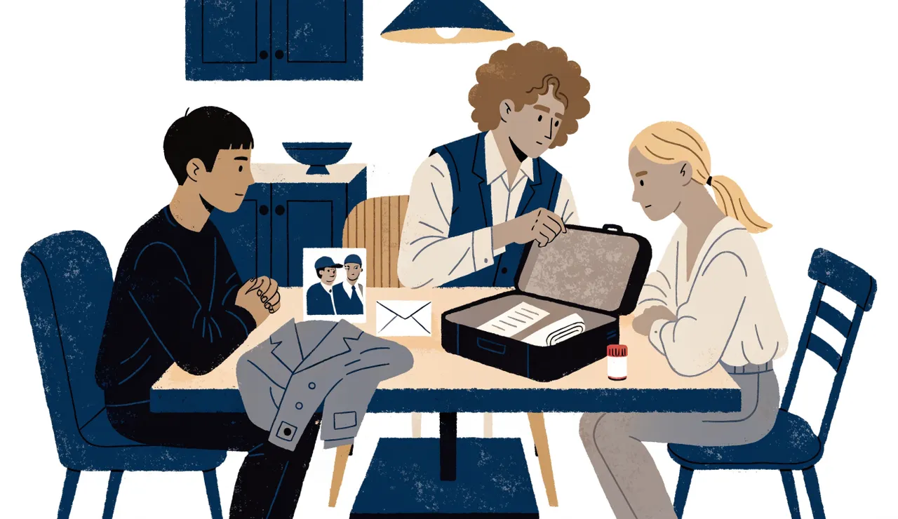
| # | 문장 | r | f |
|---|---|---|---|
| 1 | Der Mantel ist neu und schwarz. | ||
| 2 | Im Koffer sind zwei Packungen Tabletten. | ||
| 3 | Auf dem Foto sind zwei Männer. (auf dem Foto = 사진에) | ||
| 4 | Die Leute auf dem Foto sind jung. | ||
| 5 | Jonas weiß: E. ist eine Frau. (wissen = 알다) | ||
| 6 | Sujin wohnt im Haus. |
- „Ihr seid verrückt!“ →
- „Wir haben keine Idee.“ →
- „Ich habe eine Idee: Sujin!“ →
- „Habt ihr eine Idee?“ →
10 · Ein Stuhl, zwei Stühle · 복수형 15분
- der Tisch →
- die Lampe →
- das Foto →
- der Stuhl →
- das Bett →
- das Buch →
- Die Stühle neu.
- Der Spiegel alt.
- Die Spiegel alt.
- Die Lampe modern.
- Die Fotos schwarz-weiß.
11 · 오늘의 문장 틀 ② · 우리 · 너희 · 그들 15분
오늘의 문장 틀 – 먼저 듣고 세 번 따라 말하기
- Wir in Leipzig. (wohnen)
- Woher ihr? (kommen)
- Jonas und Lena nett. (sein)
- ihr Studenten? (sein)
- Wir Deutsch und Koreanisch. (sprechen)
- Was ihr? (machen)
- Sie wohnt im Haus. →
- Sie sind jung. (Mann und Frau auf dem Foto) →
- Woher kommen Sie, Herr Park? →
- Lena? Sie kommt aus Hamburg. →
12 · Ich habe … · 가지고 있어요 15분
- Ich ein Zimmer in Leipzig.
- du eine Lampe?
- Lena viele Bücher.
- Wir keine Idee.
- ihr einen Spiegel?
- Minjun und Jonas einen Koffer – aber nicht ihren!
- Das Zimmer hell.
- Das Zimmer ein Fenster.
- Wir Detektive.
- Wir einen Plan.
- du müde?
das Fenster = 창문 · der Plan = 계획
13 · Hören · Lena의 방 10분
Lena가 영상 통화로 함부르크의 친구에게 방을 보여 줘요. ▶로 듣고 문제를 푸세요. 대본은 다 푼 뒤에!
Track 2-03
| # | 문장 | r | f |
|---|---|---|---|
| 1 | ein Bett | ||
| 2 | ein Sofa | ||
| 3 | ein Schreibtisch | ||
| 4 | zwei Lampen | ||
| 5 | ein Spiegel | ||
| 6 | viele Bücher |
- Mein Zimmer ist , aber schön.
- Das Regal ist – ich habe viele Bücher!
- Ich habe Sofa.
voll = 가득 찬
대본 보기 (문제를 다 푼 뒤에!)
14 · Schreiben · 가족에게 방 소개 메시지 15분
민준이 한국의 누나에게 독일어로 메시지를 보내요(독일어 연습 중!). 먼저 민준의 메시지를 완성하고, 그다음 내 방 메시지를 쓰세요.
Hallo Jiyeon! Wie geht's? Ich jetzt in Leipzig. Ich ein Zimmer in einer WG. Zimmer ist groß und hell. Hier ein Bett und ein Schrank. Der Schrank ist alt, aber ist schön. Ich habe Tisch und keinen Stuhl. Jonas und Lena nett. Wir ein Geheimnis … 😉
das Geheimnis = 비밀
14b 내 방 메시지 (5–6문장). Mein Zimmer ist … Hier ist ein/eine … Der/Die/Das … ist … Ich habe kein/keine …
| ☐ | 명사는 대문자로 시작했나요? (das Bett, die Lampe) |
| ☐ | 남성 der · 여성 die · 중성 das를 맞게 썼나요? |
| ☐ | 복수 주어 뒤에는 sind를 썼나요? |
15 · Fallakte · Jonas의 사건 메모 10분
Jonas가 사건 메모를 썼어요. 그런데 Jonas는 문법이 조금 엉터리예요! 틀린 곳을 고쳐 주세요.
Fall Nr. 1 – Der falsche Koffer
Im Koffer ist ein Mantel, ein Foto, ein Brief und zwei Packungen Tabletten. Der Mantel ist grau. Die Foto ist alt. Auf dem Foto sind ein Mann und eine Frau. Der Brief ist für E. Wir hat keine Idee.
- Im Koffer ist ein Mantel, ein Foto … → Im Koffer ein Mantel, ein Foto …
- Die Foto ist alt. →
- Wir hat keine Idee. →
물건이 여러 개면 복수 → sind
2차시 숙제 (60분)
| # | 할 일 | 시간 |
|---|---|---|
| 1 | Teil B 대화 듣고 따라 읽기(Shadowing) 3번 + 복수형 카드 복습 | 10분 |
| 2 | H1 · H2 복수형, wir/ihr/sie 동사 형태 | 15분 |
| 3 | H3 · H4 haben, sein과 haben | 15분 |
| 4 | H5 읽기 – Lena의 메시지 | 5분 |
| 5 | H6 · H7 단수와 복수, 주어 바꿔 쓰기 | 10분 |
| 6 | 녹음: „Wir sind … Wir wohnen … Wir haben …“로 나와 가족(또는 룸메이트)을 소개해서 제출 | 5분 |
- Das ist ein Stuhl. → Das sind zwei .
- Die Lampe ist neu. → Die neu.
- Das Foto ist alt. →
- Der Tisch ist groß. →
- Wir in Leipzig. (sein)
- Ihr nett! (sein)
- Woher Amira und Oksana? (kommen)
- ihr in einer WG? (wohnen)
- Wir Lena und Jonas. (heißen)
- Ihr gut Deutsch! (sprechen)
- Minjun ein Zimmer.
- Ich keine Lampe.
- du ein Sofa?
- Wir zwei Stühle.
- ihr Zeit?
die Zeit = 시간
- Das Bad klein.
- Die WG eine Küche.
- Jonas und Lena Studenten.
- Lena viele Bücher.
- ihr müde?
Hi Anna! Wir haben jetzt einen Mitbewohner: Minjun aus Korea. Er ist nett und ruhig. Sein Zimmer ist groß, aber es hat keinen Tisch. Jonas und Minjun sind jetzt Detektive – sie haben einen falschen Koffer! Verrückt, oder? Liebe Grüße, Lena
der Mitbewohner = 룸메이트 · sein Zimmer = 그의 방 · Liebe Grüße = 안부를 전하며
| # | 문장 | r | f |
|---|---|---|---|
| 1 | Minjun ist der neue Mitbewohner. | ||
| 2 | Minjun ist laut. | ||
| 3 | Minjuns Zimmer ist klein. | ||
| 4 | Im Zimmer ist kein Tisch. | ||
| 5 | Lena findet die Detektiv-Idee verrückt. |
- Das sind Lampen. →
- Das sind Betten. →
- Das sind Stühle. →
- Die Bücher sind alt. →
- Ich habe eine Idee. (wir) →
- Du bist verrückt! (ihr) →
- Er wohnt in Leipzig. (sie, 그들) →
- Hast du Zeit? (ihr) →
Das ist meine Familie.
복습 5분
혼자 말하기: 가방 속 물건 4개를 복수형과 함께 말하기. „Im Koffer sind … Die Tabletten sind …“
16 · Teil C · Der Integrationskurs · 통합 과정 첫날 15분
Track 2-04 같은 날 아침, 수진은 이민자 통합 과정(Integrationskurs) 첫 수업에 가요.
(반 전체가 웃는다.)
| # | 문장 | r | f |
|---|---|---|---|
| 1 | Herr Brandt ist der Lehrer. | ||
| 2 | Amira hat drei Kinder. | ||
| 3 | Amiras Tochter ist fünf. | ||
| 4 | Oksanas Sohn ist fünfzig. | ||
| 5 | Sujins Mann ist Ingenieur. | ||
| 6 | Doyun ist sechs Jahre alt. |
- Sie kommt aus der Ukraine. →
- Sie ist Krankenschwester. →
- Ihr Sohn ist acht. →
- Sie hat einen Sohn, Maksym. →
- Sie sagt: „Ich habe 38.“ →
17 · Die Familie · 가족 15분
▶를 눌러 듣고 따라 하세요. 남자 가족은 der, 여자 가족은 die, 여럿이면 언제나 die!
- Taeho ist Sujins .
- Haeun ist Sujins .
- Doyun ist Sujins .
- Doyun ist Haeuns .
- Haeun ist Doyuns .
- Sujin und Taeho sind die von Haeun und Doyun.
- Haeun und Doyun sind .
Sujins Mann = 수진의 남편 (이름 + s, 아포스트로피 없음!)
- Bruder
- Tochter
- Eltern
- Sohn
- Kinder
18 · 오늘의 문장 틀 ③ · 나의, 너의, 그의 … 15분
오늘의 문장 틀 – 먼저 듣고 세 번 따라 말하기
- Das ist Bruder.
- Das ist Schwester.
- Das sind Eltern.
- Das ist Kind.
- Das ist Oma.
- Das ist Taeho. Frau heißt Sujin. (er)
- Das ist Sujin. Mann heißt Taeho. (sie)
- Wir wohnen in Leipzig. Wohnung ist klein. (wir)
- Wie heißt Bruder? (du)
- Herr Brandt, wie alt sind Kinder? (Sie)
- Jonas und Lena, ist das Koffer? (ihr)
die Wohnung = 집(아파트)
- Ich 38 Jahre alt.
- Ich zwei Kinder.
- Oksanas Sohn fünfzehn.
- Amira einen Sohn und eine Tochter.
- Taeho Ingenieur.
- Wie alt du?
19 · Die Zahlen 21–100 · 나이를 말하려면 15분
숫자를 눌러 듣고 따라 하세요.
- dreiundvierzig →
- siebenundsechzig →
- zweiundachtzig →
- neunundfünfzig →
- vierunddreißig →
- sechsundneunzig →
- 25 →
- 31 →
- 60 →
- 77 →
- 100 →
- Frau Schulze ist Jahre alt.
- Taeho ist Jahre alt.
- Herr Brandt ist Jahre alt.
- Minjun ist Jahre alt.
- Amira ist Jahre alt.
20 · Lesen · Amira의 자기소개 10분
통합 과정 숙제로 Amira가 쓴 글이에요. 먼저 끝까지 읽고 문제를 푸세요.
Ich heiße Amira Haddad. Ich bin 34 Jahre alt und komme aus Damaskus in Syrien. Meine Familie und ich wohnen jetzt in Leipzig. Mein Mann heißt Karim. Er ist 39 Jahre alt und Apotheker. Unser Sohn Omar ist acht, unsere Tochter Lina ist fünf. Meine Eltern wohnen noch in Syrien. Mein Bruder wohnt in Berlin. Er hat drei Kinder. Ich bin Lehrerin von Beruf, aber hier bin ich jetzt Schülerin!
der Apotheker = 약사 · noch = 아직 · die Schülerin = 학생(여)
| # | 문장 | r | f |
|---|---|---|---|
| 1 | Amira ist 34 Jahre alt. | ||
| 2 | Karim ist Lehrer. | ||
| 3 | Ihre Kinder heißen Omar und Lina. | ||
| 4 | Amiras Eltern wohnen in Leipzig. | ||
| 5 | Amiras Bruder hat drei Kinder. | ||
| 6 | Amira ist Lehrerin von Beruf. |
- Mann heißt Karim.
- Tochter ist fünf.
- Eltern wohnen in Syrien.
- Bruder wohnt in Berlin.
21 · Sprachmittlung · 하은이의 통역 10분
Track 2-05 오후, 유치원(Kita). 선생님이 가족 사진을 가져오라고 했어요. 수진이 하은에게 한국어로 말해요.
Das ist meine . Das ist Papa. Er Ingenieur. Das ist mein Doyun. Er ist Jahre alt. Und das ist meine . Sie in Seoul.
22 · Schreiben · 가족 사진 설명 10분
Das ist Familie. Das ist mein Vater. Er 58 Jahre alt. Er ist Taxifahrer. Das ist Mutter. Sie ist (55). Das ist meine Schwester Jiyeon. wohnt in Seoul. Mann heißt Junho. Sie eine Tochter.
22b 내 가족(또는 좋아하는 가족 사진) 소개 5–6문장. 나이와 직업도 넣어요.
| ☐ | 여성·복수 가족 앞에는 meine를 썼나요? |
| ☐ | 나이와 직업은 sein으로 썼나요? (Er ist 58.) |
| ☐ | 직업 앞에 관사를 빼고 썼나요? |
23 · Teil D · 수진의 집에서 · 이야기 마무리 5분
Track 2-06 저녁, Kochstraße 12의 2층(한국식 3층). 민준이 가방 속 사진을 들고 수진의 집에 와요.
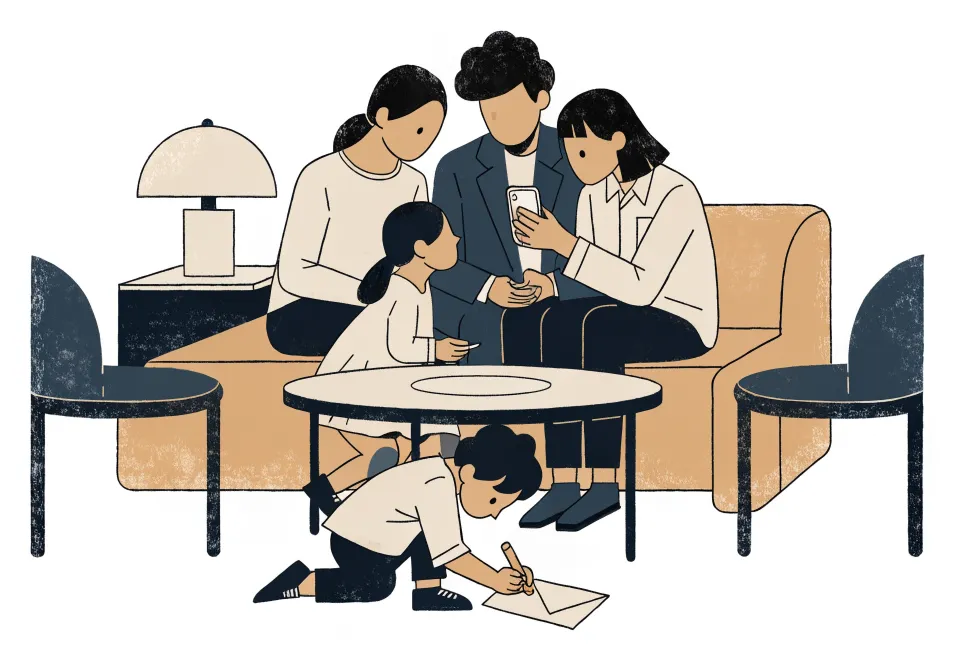
(민준이 가방 속 편지를 탁자 위에 올려놓고, 휴대폰으로 찍은 사진을 보여 준다.)
(모두가 웃는 사이, 도윤이 탁자 위 봉투를 집어 들고 탁자 밑으로 기어 들어가 크레용을 꺼낸다.)
(밤늦게 민준은 편지를 까맣게 잊은 채 WG로 돌아간다.)
| # | 문장 | r | f |
|---|---|---|---|
| 1 | 민준은 편지를 수진의 집에 가져갔다. | ||
| 2 | 수진은 사진 속 장소를 잘 안다. | ||
| 3 | 도윤이 봉투에 그림을 그린다. | ||
| 4 | 도윤이 탁자 위의 종이를 가져갔다. | ||
| 5 | 민준은 편지도 챙겨서 돌아갔다. |
3차시 숙제 (60분)
| # | 할 일 | 시간 |
|---|---|---|
| 1 | 가족 단어와 숫자 21–100을 듣고 따라 하기 + 오늘의 문장 틀 ③ 외우기 | 10분 |
| 2 | H1 · H2 가족 단어, 소유관사 | 15분 |
| 3 | H3 · H4 · H5 sein/haben, 숫자 | 15분 |
| 4 | H6 읽기 – Oksana의 메시지 | 5분 |
| 5 | H7 틀린 문장 고치기 | 5분 |
| 6 | 제출: 22b 가족 사진 설명을 다듬어 사진과 함께 제출 | 10분 |
- Mein Vater und meine Mutter sind meine .
- Mein Bruder und meine Schwester sind meine .
- Ein Sohn und eine Tochter sind zwei .
- Die Mutter von meiner Mutter ist meine .
- Haeun sagt „Papa“. Sujin sagt „mein “.
- Ich habe eine Schwester. Schwester heißt Jiyeon.
- Oksana hat einen Sohn. Sohn heißt Maksym.
- Taeho hat zwei Kinder. Kinder heißen Haeun und Doyun.
- Wir haben eine WG. WG ist in der Kochstraße.
- Minjun, wie alt ist Mutter?
- Frau Schulze, wo wohnt Bruder?
- Doyun drei.
- Haeun einen Bruder.
- Sie verheiratet?
- Wir keine Kinder.
- Wie alt ihr?
- 23 →
- 38 →
- 46 →
- 70 →
- 89 →
- zwanzig + fünfzehn =
- dreißig + zweiunddreißig =
- hundert – einundzwanzig =
- vierzig + siebenundvierzig =
Hallo Sujin! Wie geht's? Morgen ist der Geburtstag von Maksym. Er ist dann sechzehn! Meine Mutter ist auch hier in Leipzig. Sie ist 67 und spricht kein Deutsch. Haben Haeun und Doyun Zeit? Wir machen eine Party. Liebe Grüße, Oksana
morgen = 내일 · der Geburtstag = 생일 · dann = 그때
| # | 문장 | r | f |
|---|---|---|---|
| 1 | Maksym ist morgen sechzehn Jahre alt. | ||
| 2 | Oksanas Mutter wohnt in der Ukraine. | ||
| 3 | Oksanas Mutter ist 67 Jahre alt. | ||
| 4 | Sie spricht gut Deutsch. | ||
| 5 | Oksana fragt: Haben Haeun und Doyun Zeit? |
- Ich habe 26 Jahre alt. →
- Das ist mein Mutter. →
- Er ist ein Ingenieur. →
- Das sind mein Kinder. →
복습과 숙제용
이번 과의 핵심 문장 10 · 말하기 카드
▶를 눌러 듣고, 한국어 뜻만 보고 독일어로 말할 수 있는지 확인해 보세요.
| Das ist ein Bett. Das Bett ist alt. | 이건 침대야. 침대는 낡았어. |
| Das ist kein Tisch. Das Zimmer ist nicht groß. | 이건 탁자가 아니야. 방은 크지 않아. |
| Wie heißt das auf Deutsch? | 이걸 독일어로 뭐라고 해요? |
| Im Koffer sind zwei Packungen Tabletten. | 가방 안에 약 두 통이 있어. |
| Wir sind Detektive! – Ihr seid verrückt! | 우리는 탐정이야! – 너희 못 말려! |
| Habt ihr eine Idee? | 너희 생각 있어? |
| Ich habe einen Bruder und eine Schwester. | 나는 형(오빠)과 누나(언니)가 한 명씩 있어. |
| Das ist meine Familie. Mein Mann heißt Taeho. | 이건 우리 가족이에요. 제 남편 이름은 태호예요. |
| Wie alt sind Sie? – Ich bin 38 Jahre alt. | 몇 살이세요? – 38살이에요. |
| Was sind Sie von Beruf? – Ich bin Krankenschwester. | 직업이 뭐예요? – 간호사예요. |
Grammatik · 2과 문법 한눈에
① 관사 (1격)
| m | f | n | pl | |
| 그 | der | die | das | die |
| 하나의 | ein | eine | ein | – |
| 없는 | kein | keine | kein | keine |
| 나의 | mein | meine | mein | meine |
명사 → kein · 형용사 → nicht · 대명사: der → er, die → sie, das → es
② 동사 – 이제 모든 주어
| ich | wohne | bin | habe |
| du | wohnst | bist | hast |
| er/sie/es | wohnt | ist | hat |
| wir | wohnen | sind | haben |
| ihr | wohnt | seid | habt |
| sie/Sie | wohnen | sind | haben |
③ 복수형
-e · ¨-e · -(e)n · ¨-er · -s · –
관사는 언제나 die · 단어와 함께 외우기
④ 나이·직업은 sein
Ich bin 38. · Ich bin Krankenschwester.
⑤ 숫자 21–99
ein-und-zwanzig (1 + 20)
Landeskunde · 독일 생활 팁
- WG (Wohngemeinschaft): 여러 사람이 집 하나를 나눠 쓰는 것. 방은 각자, 부엌·욕실은 함께. 독일 대학생의 약 4분의 1이 WG에 살아요. 새 룸메이트를 뽑을 때는 WG-Casting(면접)을 하기도 해요.
- 층 세는 법이 달라요! 땅과 같은 높이의 층은 das Erdgeschoss (EG), 그 위가 der 1. Stock. 그래서 수진이 사는 한국식 3층은 독일어로 im 2. Stock이에요.
- Integrationskurs: 이민자를 위한 국가 지원 과정. 독일어 수업(보통 600시간)과 독일 사회·역사·법을 배우는 Orientierungskurs로 이루어져요. 마지막에 B1 시험(DTZ)을 봐요.
- Kita (Kindertagesstätte): 1–6세 아이가 다니는 어린이집·유치원. 만 1세부터 자리를 받을 법적 권리가 있지만, 대도시에서는 자리가 모자라 미리 신청해야 해요. 선생님은 Erzieher/Erzieherin이라고 불러요.
Wortschatz · 단어장
집과 가구
| das Zimmer, - | 방 |
| die Küche, -n · das Bad, ¨-er | 부엌 · 욕실 |
| das Bett, -en · der Tisch, -e · der Stuhl, ¨-e | 침대 · 탁자 · 의자 |
| der Schrank, ¨-e · das Regal, -e | 옷장 · 책장 |
| die Lampe, -n · der Spiegel, - | 전등 · 거울 |
| das Sofa, -s · der Teppich, -e | 소파 · 양탄자 |
| der Schreibtisch, -e | 책상 |
형용사
| groß ↔ klein | 큰 ↔작은 |
| alt ↔ neu | 낡은 ↔ 새 |
| hell ↔ dunkel | 밝은 ↔ 어두운 |
| teuer ↔ billig | 비싼 ↔ 싼 |
| laut ↔ ruhig | 시끄러운 ↔ 조용한 |
| schön · modern · bequem | 예쁜 · 현대적인 · 편한 |
| verrückt · voll | 미친(못 말리는) · 가득 찬 |
가족
| der Vater · die Mutter · die Eltern | 아버지 · 어머니 · 부모 |
| der Sohn · die Tochter · das Kind, -er | 아들 · 딸 · 아이 |
| der Bruder · die Schwester · die Geschwister | 형제 · 자매 · 형제자매 |
| der Mann · die Frau | 남편 · 아내 |
| der Opa · die Oma | 할아버지 · 할머니 |
| verheiratet | 결혼한 |
사람과 직업
| der Lehrer / die Lehrerin | 선생님 |
| der Ingenieur / die Ingenieurin | 엔지니어 |
| die Krankenschwester | 간호사 |
| der Apotheker / die Apothekerin | 약사 |
| der Student / die Studentin | 대학생 |
| Was sind Sie von Beruf? | 직업이 뭐예요? |
이번 과 이야기 · 3컷으로 다시 보기
말해 보기 그림을 보며 이야기를 독일어로 말하고 녹음해 보세요. (Das ist Minjuns Zimmer. Es ist … · Im Koffer sind … · Das ist Sujins Familie …)
Minjuns Tagebuch · 민준의 일기
2. Oktober
Mein Zimmer ist groß und hell. Aber ich habe keinen Tisch!내 방은 크고 밝다. 그런데 탁자가 없다!
Jonas und Lena sind nett. Wir sind jetzt Detektive.요나스와 레나는 친절하다. 우리는 이제 탐정이다.
Heute Abend war ich bei Sujin. Ihre Familie ist sehr nett. Doyun ist drei und sehr süß.오늘 저녁 수진 누나 집에 갔다. 가족이 아주 친절하다. 도윤이는 세 살이고 아주 귀엽다.
Jetzt bin ich in meinem Zimmer. Das Foto ist hier.지금 내 방이다. 사진은 여기 있다.
Aber der Brief? Der Brief ist weg!그런데 편지는? 편지가 없어졌다!
war = ~에 있었다(sein의 과거) – 7과에서 배워요.
→ 다음 과 · Kapitel 3: Im Supermarkt
민준과 Lena의 첫 장보기. 외투 주머니에서 나온 작은 영수증 한 장이 새로운 단서가 되는데…
Fallakte · 사건 수첩 (이 기기에 자동 저장)
1과에서 쓴 내용에 이어서 써요. 모르는 칸은 비워 두세요!
| Der Mantel ist … 외투는 어때요? | |
|---|---|
| Auf dem Foto sind … 사진 속에는? | |
| Die Tabletten – für wen? 약은 누구의 것일까? | |
| Wo ist der Brief jetzt? 편지는 지금 어디에? | |
| Wer hat eine Idee? 누가 도와줄 수 있을까? |
나의 추리 (한국어도 좋아요) – 편지는 어디로 갔을까요?
Das kann ich! · 자기 점검
| 할 수 있어요 |  |  |  |
|---|---|---|---|
| 방과 가구 이름을 관사(der/die/das)와 함께 말할 수 있다. | |||
| 방과 물건이 어떤지 형용사로 설명할 수 있다. | |||
| kein과 nicht로 부정할 수 있다. | |||
| 모르는 단어를 독일어로 물어볼 수 있다. (Wie heißt das auf Deutsch?) | |||
| 복수형을 알아보고 wir/ihr/sie 동사를 쓸 수 있다. | |||
| 가족을 소개하고 나이와 직업을 말할 수 있다. | |||
| 소유관사(mein, dein, sein, ihr …)를 쓸 수 있다. | |||
| 21–100 숫자를 말하고 알아들을 수 있다. | |||
| 방 소개 메시지와 가족 사진 설명을 쓸 수 있다. |